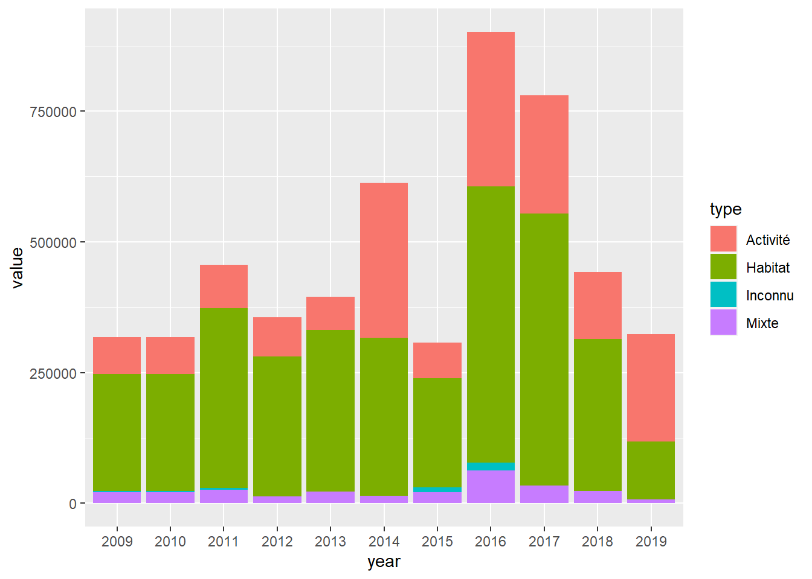
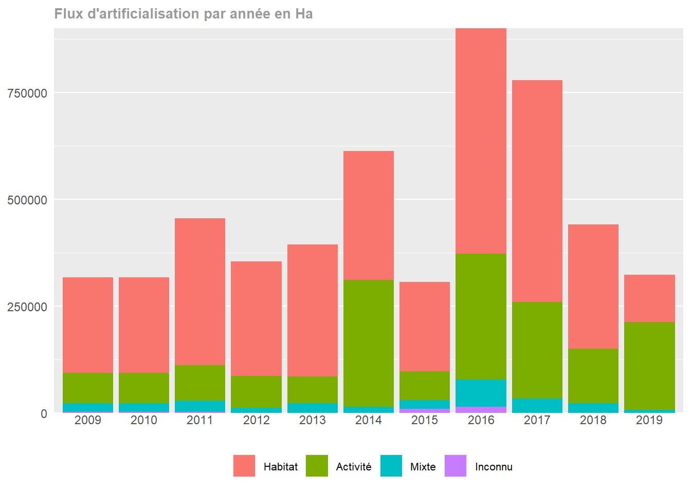
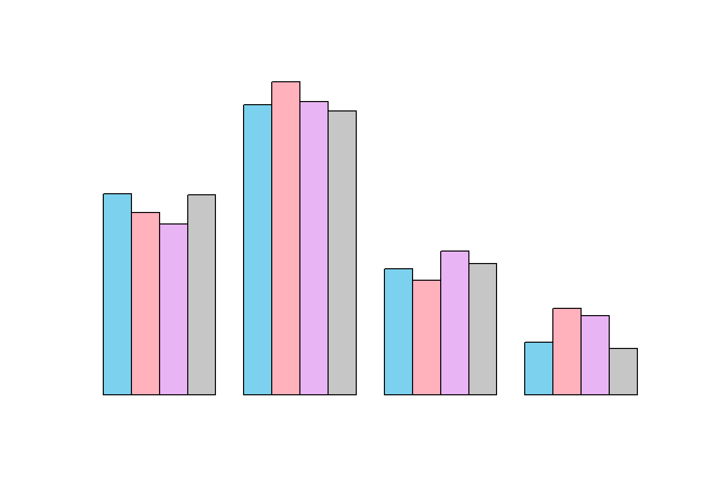
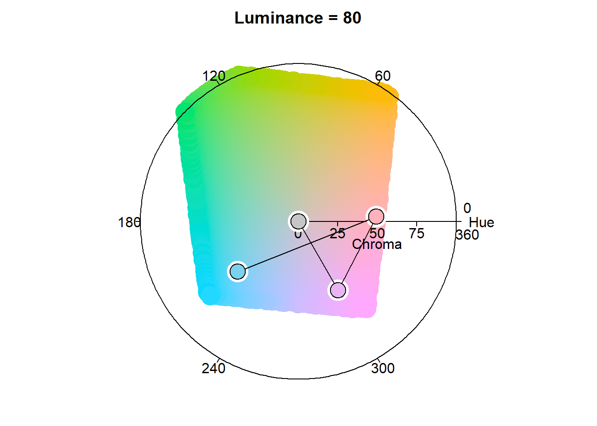
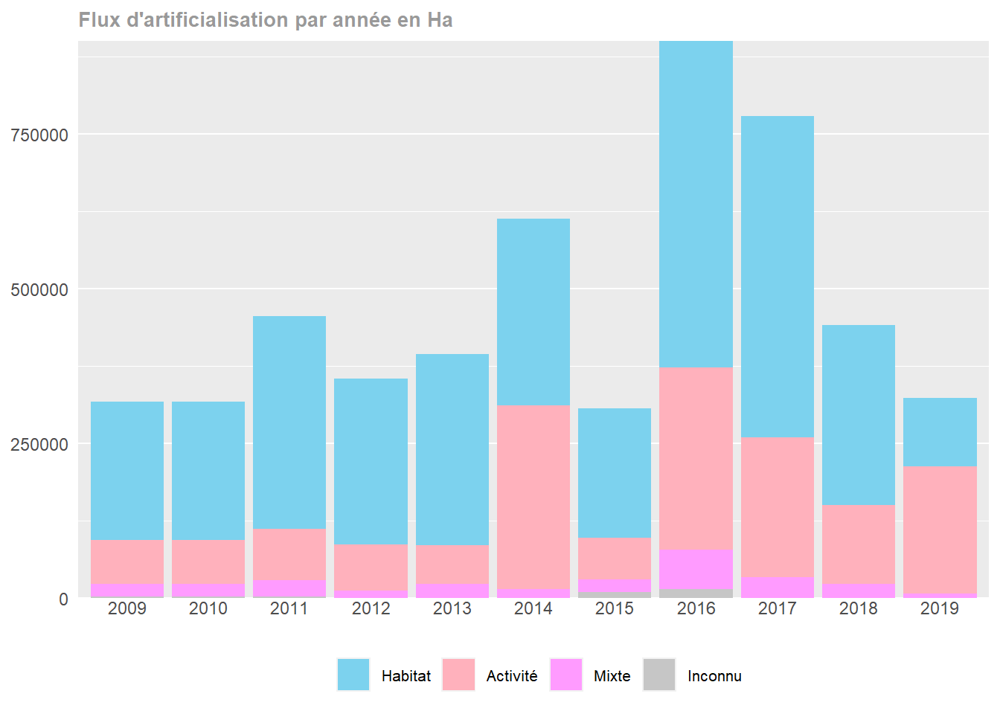

Chapitre 5 Lecture des données avec transformation
Lisons les données de flux et rappelons la fonction getStatsFlux :
library(tidyverse)
flux <- read_csv("data/obs_artif_conso_com_2009_2020_V2.csv")Chargeons notre fichier helpers.R qui contient nos fonctions :
source("helpers/helpers.R", encoding = "UTF-8")Nous avons notre fonction getStatsFlux pour voir les flux par année, pour une commune donnée :
df <- flux %>% getStatsFlux("13001")5.1 Premier graphique
Maintenant que nous parvenons à récupérer les stats bien formatées, nous pouvons tenter le graphique des flux d’artificialisation sur Aix en Provence :
library(ggplot2)
p <- ggplot(data = df,
aes(x = year,
y = value,
fill = type)) +
geom_bar(stat = "identity")
p
C’est vraiment le graphique le plus basique que nous puissions réaliser.
5.2 Quelques améliorations
Nous pouvons en changer quelques éléments, améliorer l’esthétique :
# Ordre des types
df$type <- as.character(df$type)
df$type <- factor(df$type, levels = c("Habitat", "Activité", "Mixte", "Inconnu"))
# Plot
p <- ggplot(data = df,
aes(x = year,
y = value,
fill = type)) +
geom_bar(stat = "identity") +
theme(
axis.title.x = element_blank(), # pas de titre pour l'axe X
axis.ticks.x = element_blank(), # pas de tirets pour l'axe X
axis.text.x = element_text(vjust = 3), # repositionnement des années un peu plus en haut (vu qu'on enlève les tirets)
axis.ticks.y = element_blank(), # pas de tirets sur l'axe Y
axis.title.y = element_blank(), # pas de titre pour l'axe Y
panel.border = element_blank(), # pas de bordure
panel.grid.major.x = element_blank(), # pas de lignes verticales
panel.grid.minor.x = element_blank(), # pas de "sous"-lignes verticales
legend.position = "bottom", # légende en vas
legend.title = element_blank(), # pas de titre pour la légende
plot.title = element_text(face = "bold", size = 10, colour = "grey60"), # titre en gras et en gris
legend.text = element_text(size = 8) # taille de texte pour la légende (plus petit)
) +
ggtitle("Flux d'artificialisation par année en Ha") +
scale_y_continuous(expand = c(0, 0)) # réinitialise la marge en x et y vers les coordonnées 0,0 (au plus proche)
p
Nous avons allégé au maximum le graphique. Nous avons mis la légende en bas pour qu’elle n’écrase pas le graphique
Mais les couleurs ne sont pas forcément encore tops !..
5.3 Couleurs HCL (Hue Chroma Luminance)
5.3.1 A propos
Nous utilisons la modélisation de couleurs HCL (pour Hue Chroma Luminance).
En HCL, une couleur est définie selon trois paramètres :
- Hue, qui définit la teinte (bleue, rouge, …) d’une couleur
- Chroma son côté coloré (colourfulness)
- Luminance sa luminosité
5.3.2 Nos couleurs
Nous allons prendre 4 couleurs pour notre palette :
- Bleue pour l’habitat
- Rouge pour l’activité (le rouge rappelle l’activité)
- Magenta pour mixte (un peu un mélange des deux premiers)
- Gris pour la catégorie Inconnu (gris est une couleur neutre qui symbolise bien l’inconnu)
Par défaut, le chroma sera fixé à 50, la luminosité à 80 (sur une échelle de 0 à 100) :
library(colorspace)
colorBlue <- hcl(h = 220,
c = 50,
l = 80, fixup = TRUE)
colorRed <- hcl(h = 4,
c = 50,
l = 80, fixup = TRUE)
colorMagenta <- hcl(h = 300,
c = 50,
l = 80, fixup = TRUE)
colorGrey <- hcl(h = 0,
c = 0,
l = 80, fixup = TRUE)
myPalette <- c("blue" = colorBlue,
"red" = colorRed,
"magenta" = colorMagenta,
"grey" = colorGrey)5.3.3 Assistants
A savoir que la librairie colorspace intègre un assistant pour choisir les couleurs dans un espace HCL :
hclcolorpickerLe site de Sciences Po MediaLab propose un assistant vraiment pas mal pour choisir les couleurs HCL. Ce dernier s’appelle “I Want Hue”
Testons notre palette :
demoplot(myPalette, "bar")
Voici une représentation des couleurs dans l’espace HCL :
hclplot(myPalette)
5.3.4 Utilisation dans notre graphique
Utilisons cette nouvelle palette de couleurs dans notre graphique :
p +
scale_fill_manual(
name = "Flux\nd'artificialisation\n2009-2020",
labels = c("Habitat", "Activité", "Mixte", "Inconnu"),
values = as.character(myPalette)
)5.4 Export de la palette
Exportons notre palette de couleurs pour la réutiliser plus tard :
saveRDS(myPalette, "myPalette.rds")5.5 Une couleur plus “punchy”
Utilisons une couleur plus “punchy” pour le magenta en mettant un chrom de 100 :
p + scale_fill_manual(
name = "Flux\nd'artificialisation\n2009-2020",
labels = c("Habitat", "Activité", "Mixte", "Inconnu"),
values = c(colorBlue,
colorRed,
hcl(h = 300, c = 100, l = 80), # Magenta
colorGrey)
)
5.6 Couleurs Cerema
Nous aurions aussi pu choisir les couleurs de l’établissement.
Lisons la palette de couleurs Cerema :
library(rjson)
paletteCerema <- fromJSON(file = "palettes/palette_cerema.json")
paletteCerema$texte
[1] "#292574"
$principale
$principale$vert
[1] "#B0CC4E"
$principale$jaune
[1] "#FDEB7D"
$principale$orange
[1] "#F49D54"
$principale$bleu
[1] "#7E97CE"
$principale$vert2
[1] "#60B467"
$secondaire
$secondaire$vert
[1] "#96AB5B"
$secondaire$jaune
[1] "#F7D05C"
$secondaire$orange
[1] "#EF7757"
$secondaire$bleu
[1] "#5A71B4"
$secondaire$vert2
[1] "#448D60"
$complementaire
$complementaire$vert
[1] "#EBF1D4"
$complementaire$jaune
[1] "#FEFAE0"
$complementaire$orange
[1] "#FBE6D6"
$complementaire$bleu
[1] "#DEE5F1"
$complementaire$vert2
[1] "#D8ECDA"Elle est constituée d’une couleur pour le texte, pour les couleurs principales, secondaires et complémentaires.
Choisissons pour les couleurs des flux d’habitat, d’activité et mixtes des couleurs secondaires de la palette Cerema. Pour les données inconnues, on prend la couleur grise d’avant :
p + scale_fill_manual(
name = "Flux\nd'artificialisation\n2009-2020",
labels = c("Habitat", "Activité", "Mixte", "Inconnu"),
values = c(paletteCerema$secondaire$bleu,
paletteCerema$secondaire$orange,
paletteCerema$secondaire$vert,
colorGrey)
)